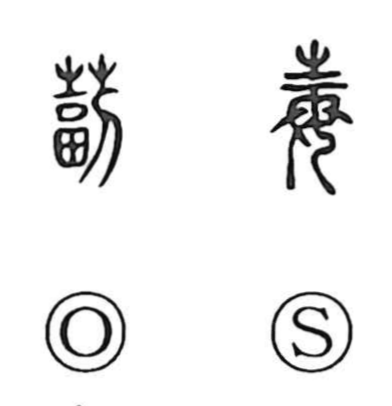

毒

Uncategorized
Kun: sokonau | On: doku
poison ・ to poison ・ harm
Explanation
In the oldest forms, this character is a pictograph: it portrays a woman richly adorned for worship or festival, with the upper element representing piled hair ornaments. From the image of lavish adornment and devoted attendance, it originally expressed warm, wholehearted attentiveness—teatsui, “cordial.” Early lexicography also glossed it as “thick, ample.” Only later was the graph borrowed for its sound doku to write the idea of “poison,” as in dokuyaku; the toxic sense is thus a secondary, loaned usage layered onto a ritual, benevolent origin.